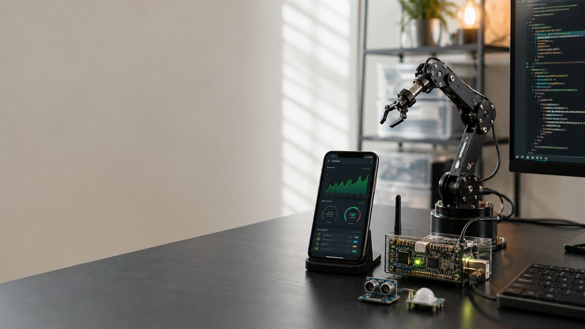

Build production Flutter modules with reusable architecture and scalable state management while contributing through sprint planning, code review, daily standups, and CI/CD workflows.

Mobile applications · IoT · Applied AI
Syed Affan Ali
I build dependable mobile products that connect people, devices, and data.
1.5+Years building mobile apps
6Selected software & hardware projects
KarachiPakistan · Mobile & connected systems
Profile
Software built for the real world.
Computer Systems Engineering graduate and Flutter developer with hands-on experience shipping responsive, offline-first mobile applications.
My work sits where mobile software meets connected hardware: field data capture, sensor-driven systems, robotics, and practical AI. I care about clean architecture, resilient synchronization, and interfaces that stay useful outside ideal lab conditions.
Work with meExperience
Production work, from interface to field operation.
Delivered responsive Flutter interfaces, hardware-aware features, REST integrations, and offline synchronization using Provider, Bloc, IsarDB, SharedPreferences, and Dart isolates.
Translated Figma designs into high-fidelity cross-platform interfaces and built REST, JSON, and multipart data flows for monitoring and control-oriented applications.
Built and deployed a Sugar Cane Trolley Registration App with geolocation, image capture, Google Maps, nested navigation, and a resilient offline upload pipeline.
Selected projects
Connected systems with tangible outcomes.
01
IoT · Sensing · Data
Water Quality Monitoring System
Real-time pH, turbidity, and temperature sensing with a Python pipeline, remote visualization, anomaly detection, and threshold alerts.
02
Production mobile app
Sugar Cane Trolley Registration
Geo-tagged field registration with image capture and reliable background synchronization in low-connectivity environments.
03
Robotics · Control
Gesture-Controlled Robotic Arm
Accelerometer-driven hand tracking, servo actuation, and smooth C++ motion interpolation, with an OpenCV control extension.
04
Agentic AI · RAG
AI Document Q&A Agent
A document assistant with FAISS retrieval, conversational memory, source citations, and a Streamlit upload and query interface.
05
Edge monitoring
Energy Anomaly Detection
An ESP32 prototype that streams electrical measurements and flags unusual consumption patterns with a lightweight ML model.
06
Prediction · Alerts
Smart Greenhouse System
Environmental sensing, remote readings, near-term condition prediction, and actionable threshold alerts.
Capabilities
A practical full-stack toolkit for connected products.
Mobile
Flutter, Dart, Provider, Bloc, IsarDB, SharedPreferences, isolates, REST APIs, JSON
Embedded & IoT
Arduino, ESP32, C/C++, sensor integration, microcontrollers, robotics, connected data
AI & Vision
Python, TensorFlow, PyTorch, scikit-learn, OpenCV, LangChain, RAG, Hugging Face
Engineering
Git, GitHub, Figma, Agile/Scrum, unit testing, SOLID principles, clean architecture
EducationB.E. Computer Systems
Mehran University of Engineering & Technology · 2019—2023
TrainingFlutter · Arduino & Robotics
MUET and Creativo, Karachi
LanguagesUrdu · English
Native · IELTS Band 6.5
Contact
Let’s build something that works beyond the demo.
For mobile development, connected product work, and conversations around applied AI and robotics.
affan.syed001@gmail.com